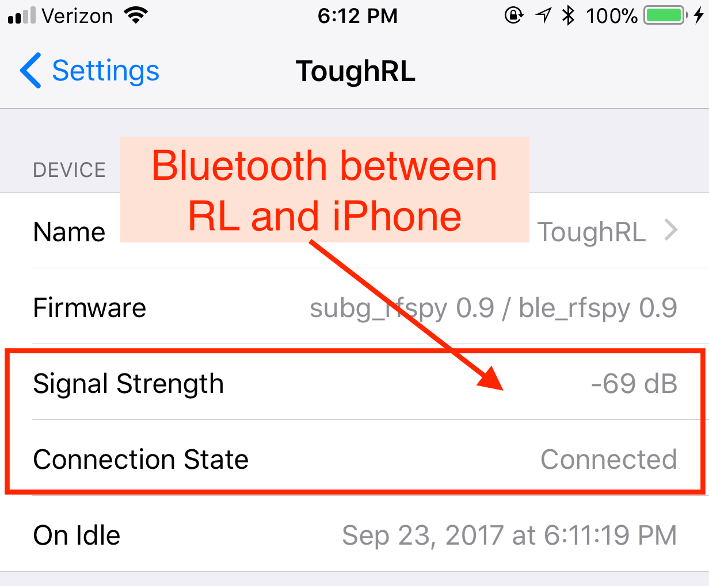

RileyLink
Le RileyLink (RL) est un périphérique open-source qui facilite la communication entre Bluetooth Low Energy (BLE) et 916MHz ou 433MHz communication sans fil. Qu'est-ce que cela veut dire pour vous ? Que le RileyLink est la passerelle entre votre pompe insuline, CGM, et iPhone.
Acheter ou monter le RileyLink
Le RL est disponible comme une suite de fichiers PCB et un logiciel, avec des instructions pour le monter sur votre propre RL module matériel. Tout ceci est disponible ici : GitHub de RileyLink
Si vous n'êtes pas prêt(e) à construire votre RL (et la plupart d'entre nous ne l'est pas), des membres de la communauté coordonne la fabrication périodiquement des RL. Vous pouvez le commander ici : site web du RileyLink
Monter le RileyLink
Votre RL arrivera avec la batterie déconnecté et ses composants ne seront pas dans sa boîte. Il est à vous de les mettre dedans et attacher la batterie.
Assurez-vous que la batterie lipo est bien connectée. Alignez la petite strie et poussez assez fermement pour avoir une bonne connexion. Une connexion mal faite peut entraîner des soucis de communication avec Loop et votre pompe insuline.
ERREURS LES PLUS COURANTES :
1) Ne pas avoir bien attaché le câble de la batterie lipo
2) Ne pas avoir complètement chargé la batterie
Comparez votre câble de la batterie lipo avec les photos ci-dessous. Il faut un peu de force pour bien connecter le câble comme dans les photos. Et souvenez-vous de mettre le RL au chargeur pendant la nuit.
 RL avec cable mal-fixé
RL avec cable mal-fixé
 RL avec cable bien fixé
RL avec cable bien fixé
Enfin, la plaquette et la batterie se mettent dans la boîte assez fermement aussi. Cliquez sur l'image ci-dessous pour regarder une vidéo de montage.

Communications radios
Le RL communique avec la pompe insuline via des communications par radiofréquence. Plusieurs variables peuvent influencer la facilité avec laquelle ces communications s'exécutent, comme l'interférence des autres périphériques, la température, blocage physique, etc.
Quand votre RL et votre pompe se communiquent pour la toute première fois, Loop fait une série d'essais que vous ne verrez pas. En gros, le RL envoie des petits messages à la pompe et attend une réponse. Le RL essaye le même "ping" avec la pompe via plusieurs fréquences radios différentes. La gamme des fréquences que le RL essaye se base sur le modèle de pompe insuline que vous avez indiqué à Loop (Omnipod, Medtronic NA / CA, ou Medtronic WW). Le RL va ensuite prendre note des fréquences qui ont parues les plus fiables pour établir la connexion, et va continuer de l'utiliser.
Typiquement cette fréquence est assez fiable pour chaque pompe et RL, mais pendant des changements de température il se peut que la meilleure fréquence n'est pas celle actuellement utilisée. Dans ce cas où le RL aura des problèmes de communication, Loop a une solution qui dira automatiquement au RL "coucou, on va essayer de trouver une meilleur fréquence, celle-là ne marche plus très bien". Ceci se fait automatiquement si les communications échoue pendant 14 minutes (autrement dit, deux cycles de Loop).
Les communications Bluetooth
Le RL communique avec votre iPhone et l'application Loop via Bluetooth (BT). Si votre iPhone a des problèmes avec BT, votre Loop aura des échecs. Il y a eu des rapports disant que des périphériques audios (comme un casque Bluetooth ou le système audio de votre voiture) peuvent troubler la communication avec Loop. Si vous constatez que Loop échoue fréquemment dans un endroit particulier, vous pouvez essayer de voir s'il n'y a pas des soucis BT dans ce lieu.
Votre signal BT peut se voir dans les réglages de Loop, dans le menu RL, sur la ligne Force du signal. Au fur et à mesure que vous vous rapprochez et vous éloignez de votre téléphone, vous pouvez observer ce nombre augmenter et diminuer. Cette ligne ne montre pas les soucis de signal avec la pompe mentionné ci-dessus.

Les lumières
Le RL a plusieurs petites lumières que vous pourriez voir de temps en temps. Il n'y a pas de lumière qui montre que le RL est allumé. Si vous soupçonnez que votre RL est éteint, essayez de l'éteindre et le rallumer en utilisant le petit interrupteur. Vous devriez voir les lumières au centre de la plaquette clignoter très vite. Si elles clignotent, alors votre RL a de la batterie.
-
Lumière rouge : chargeur. La lumière rouge reste allumée pendant que le RL est au chargeur et n'est pas encore à 100% de batterie. Vous remarquerez peut-être que la lumière rouge se rallume périodiquement même après l'avoir chargé à 100%. C'est simplement le RL qui se remet à 100, une fois tombé à 99%.
-
Lumière verte : connexion Bluetooth. La lumière verte reste allumée tant que la connexion avec votre iPhone est établie et fonctionne. Si cette lumière s’éteint vous devrez faire le dépannage nécessaire pour rétablir la connexion. Essayez d’abord d’éteindre puis rallumer le Bluetooth de votre téléphone, puis d’éteindre et rallumer le RL via son interrupteur.
-
Lumière bleue : communications avec la pompe insuline. Si vous avez un firmware ancien installé sur votre RL, certaines des lumières bleues vont clignoter pendant que le RL communiqué avec la pompe. C’est sa façon de vous faire savoir qu’il est en train de récupérer des données. Vous allez également remarquer plus de lumières bleues si vous avez choisi l’option “Activer les LEDs de diagnostique” pour les utilisateurs Medtronic possédant le firmware le plus récent, d’août 2018.
Une lumière bleue qui ne clignote pas et reste allumée peut signifier deux choses :
- Un problème temporaire qui peut être résolu par une réinitialisation du RL (en l’éteignant et le rallumant via l’interrupteur)
- Un short circuit ou des dommages que la plaquette aurait subi. La transpiration et l’humidité sont les principales responsables, donc essayez d’éviter ce type d’environnement le plus possible. Ne gardez pas votre RL dans la taille de vos shorts contre votre peau en faisant du sport, par exemple.
Si la lumière reste allumée même après avoir réinitialisé le RL, il est grand temps de retrouver votre RL de secours.
Charger le RL
La batterie qui vient avec le RL n’est probablement pas chargée complètement en arrivant chez vous, donc veuillez le mettre à charger. Vous allez avoir besoin d’un cable USB mini et une prise comme celle de votre iPhone. Le RL faut environ 2 heures pour se charger à 100% (la lumière rouge s’éteindra complètement, voir ci-dessus pour une explication plus en détaille) et devrait durer facilement au moins une journée complète. Typiquement, elle dure 30 heures sans soucis. La plupart des utilisateurs mettre leur RL à charger pendant la nuit. Le RL s'arrête automatiquement de charger quand il est à 100%, donc il n'y a pas de risque de le laisser sur le chargeur pendant longtemps.
Comme il est recommandé de laisser le RL sur le chargeur pendant la nuit et comme la batterie dure facilement plus que 24 heurs, il n'y a pas d'indicateur de batterie pour le RL. La batterie n'est pas non plus disponible sur Nightscout ou dans l'application Loop. Si vous oubliez de charger le RL pendant la nuit, vous pouvez le recharger avec un câble USB et batterie externe. Un petit cable USB pourrait être une bonne addition de votre sac.
Portée du signal
La portée du signal du RL dépend énormément sur votre environnement. La plupart des gens portent leur RL dans un étui de ceinture ou le gardent dans une poche pendant la journée. La fréquence radio aura une portée inférieur à celle du Bluetooth, alors le RL fonctionnera mieux si vous le gardez à côté de votre pompe insuline, plutôt que de le garder avec l'iPhone.
L'exemple type d'environnements difficiles serait des conférences sur l'informatique, des stades de sport, et autres endroits où les communications sans-fil sont nombreuses.
Batterie Lipo
Si vous avez commandé votre kit RL, vous devez brancher le câble de la batterie. Veuillez vérifier que le câble est solidement attaché dans la douille. Un câble mal branché entraîne des failles de communication avec Loop.
RL avec cable mal-fixé
RL avec cable bien fixé
Gardez votre RL et la batterie lipo protégés. Les batteries lipos sont dangereuses quand elles sont endommagées ou perforées, donc la boîte est très importante. Si votre batterie est endommagée, veuillez la déconnecter immédiatement et la jeter correctement, selon les consignes de votre département de domicile. Vous pouvez commander une nouvelle batterie lipo sur le site Internet de RileyLink.
Enlever la batterie lipo
Pour enlever la batterie lipo du RL, veuillez le faire soigneusement et avec beaucoup de patience. Bougez la connexion de batterie de côté à côté lentement pour la desserrer de sa prise. Parfois on peut utiliser une petite pince à becs pointus. On peut également essayer avec un tournevis à tête plate, comme montré dans cette video.

Attendre le RileyLink
Oui, attendre le RL est extrêmement difficile si les commandes sont en attente. S'il vous plaît, soyez patient(e). Loop ne marche pas sans le RL.
Si vous ne voulez absolument pas attendre sans rien faire, essayez les suggestions ci-dessous.
D'abord et avant tout : si vous changez de pompe afin de looper, familiarisez-vous avec votre nouvelle pompe. Parfois, changer de pompe insulin entraînera des changements de votre régime de traitement (comme taux de basale, ratios glucides, etc) simplement à cause du cathéter. C'est une bonne idée d'utiliser votre pompe avant même de commencer avec Loop, pour que vous puissiez avoir une variable en moins. Comme ça vous pouvez vérifier s'il vous faut des changements de régime. Les mêmes astuces s'appliquent pour le Dexcom. Si cela est la première fois que vous utilisez Dexcom, commencez-le avant Loop. Familiarisez-vous avec ce que l'on appelle les "compression lows" (quand, en dormant, vous vous mettez sur le capteur et le fluide interstitiel se déplace, entraînant des hypoglycémies fausses) et les étalonnages avant de commencer avec Loop.
Si vous connaissez bien votre pompe et le Dexcom, voici d'autres idées :
1) Programmez votre pompe avec vos débits de basal
2) Ajoutez les autres réglages de la pompe
3) Mettez à jour votre iPhone / iPod Touch
4) Mettez à jour macOS
5) Mettez à jour watchOS
6) Téléchargez Xcode (cela prendre assez longtemps)
7) Inscrivez-vous pour votre compte de développeur Apple. Confirmez votre abonnement en vérifiant votre e-mail.
8) Installez Homebrew sur votre ordinateur
9) Téléchargez Loop et commencez de le monter
10) Faites les personnalisations, si désiré
11) Montez l'application Loop sur votre iPhone / iPod Touch
12) Mettez en place Nightscout, ou mettez à jour votre Nightscout (facultative)
13) Ajoutez les LoopDocs dans vos pages favorites
14) Inscirvez-vous dans le groupe Zulipchat et / ou le groupe Facebook de Looped. Le groupe d'entraide français se trouve ici.
MAIS, après... il faut simplement attendre. Vous ne pouvez pas en faire plus sans le RileyLink. Cependant, si vous faites tout cela avant de recevoir le RL, vous serez prêt(e) à commencer tout de suite dès son arrivée.